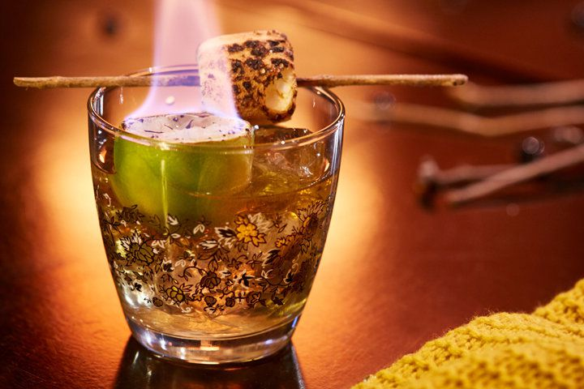

Velkommen
[K.I. generert tekst] Gå utover det vanlige og inn i et sted hvor hvert glass bærer en hemmelighet.
Nyt et rike av fortryllede drikker og mystiske eliksirer – hvor eldgamle oppskrifter hviskes gjennom tidene, og hver drink er laget for å vekke mer enn bare sansene. Her glitrer en gyllen eng av glemt magi, krydrede smaker vekker ånden, og dype, skyggefulle fat bærer med seg historier om fjerne land og skjulte verdener.
Enten du søker varme ved peisen, mot for veien videre, eller bare en smak av noe ekstraordinært, vil du finne det. Skjenket med omhu og et snev av undring. Menyen vår er ikke bare en liste over drinker, men en samling historier – hver slurk er en invitasjon til å utforske, drømme og kanskje... oppdage litt magi i deg selv.
Så sett deg ned, vandrer. Glasset ditt venter.

Dagens Spesial
Dreamweaver´s Delight — En nydelig cocktail med stjerneskumglitter og kirsebær
Om oss
[K.I. generert tekst] Denne magiske baren ble født ved et uhell på et kjøkken i en glemt landsby hvor sukker var sjeldnere enn gull. En ung brygger, desperat etter å imponere en kongelig gjest, blandet sammen alt hun hadde igjen — knuste kjeks, smeltet sjokolade, tørket frukt og en skvett honning som sies å være forhekset av skogens ånder. Da blandingen ble brygget, skimret den svakt og fylte rommet med en uimotståelig varme. De som smakte den, kjente et glimt av glede så sterkt at det varte i flere dager. Ryktet spredte seg raskt, og den “magiske baren” ble en legende — ikke bare for smaken, men for evnen til å gjøre selv de mørkeste øyeblikkene litt lysere.